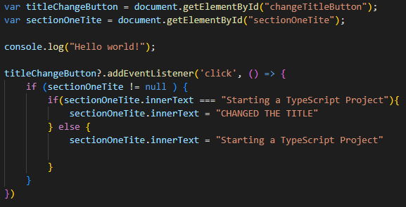

Below is the code that makes this button do what it does! Just like TS, it can use the DOM to locate parts of HTML and change them.
class Demo { property: string; constructor(message: string) { this.property = message; } testFunction() { return "Hello, " + this.property; }} let demoClass = new Demo("CS401");
This allows you to create and use classed somewhat like OOP. You can have internal properties, functions, and many other OOP like functions.
Typescript and Javascript are very similar languages. Typescript is actually based on Javascript, but with more strict standards. The main one being types. Functions and variables in Typescript must be specifically types unlike in Javascript. Thankfully TypeScript allows implicit typing so for example:
This variable will be a constant, but its type is implied it is a string. In normal JS, it does not care about its type, in TypsScript it does.